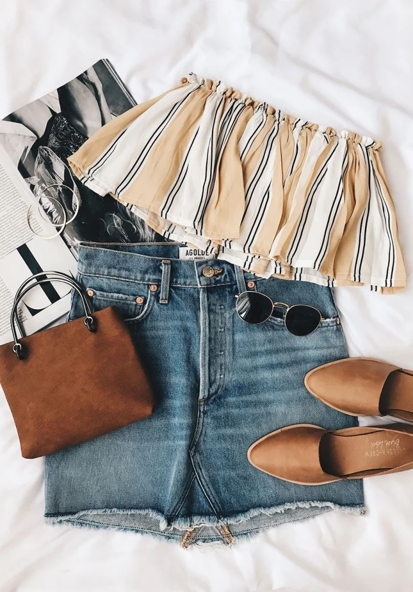
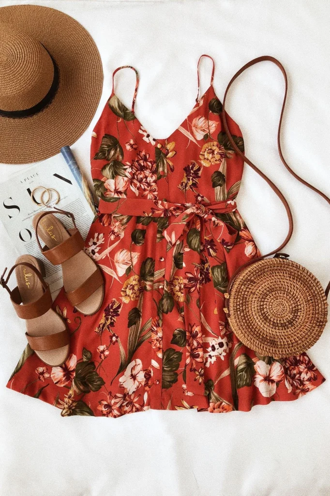
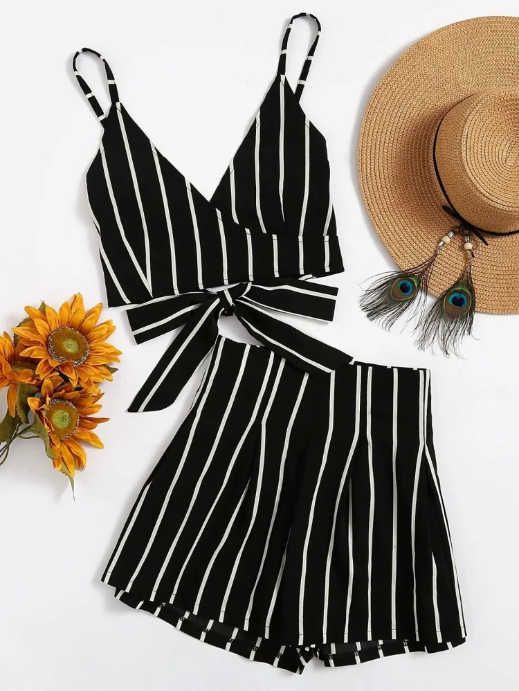

SUMMER OUTFIT IDEAS

FUN FLORALS
The first idea that pops up into my mind when I think about Summer is a bright floral Sundress. They look really cute, laid-back but also quite elegant. You can pair it up a pair of comfortable flip-flops and and half of your outfit is done. You can add some more sass to it by pairing it up with a Summer hat and a cute bag, talking of which Circular Jute Bags are very much in trend these days. Put on some minimalist chunky jewellery and there you go!
COMFY CO-ORDS
Next up is this amazingly beautiful two piece co-ord that is totally trending at this hour. Co-ords look really cool, classy and trust me, they are super comfy. You can wear it almost everywhere during Summer, be it on a day out, or while you are on the beach or even on a night out. You can accessorise it with some catchy earrings and a pair of simple yet cool footwear, and you shall need nothing else to ace at Fashion this Summer!
DENIM
Denim skirts are totally back in trend, these days and you may as well try one out this Summer. I really like this combination of a denim skirt with an off-shoulder striped top. It looks really stylish and vibrant, bringing about the true essence of Summer. As for accessories, a pair of hoop earrings, a classy handbag, a pair of fashionable shades and lastly, comfortable footwear, will do just right!
<< VACATION DAY OUTFIT IDESA FOR THIS SUMMER